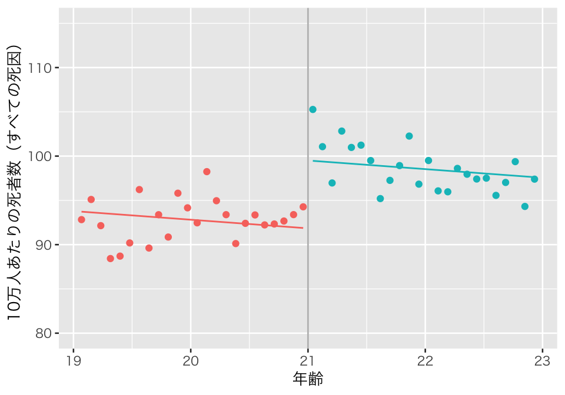
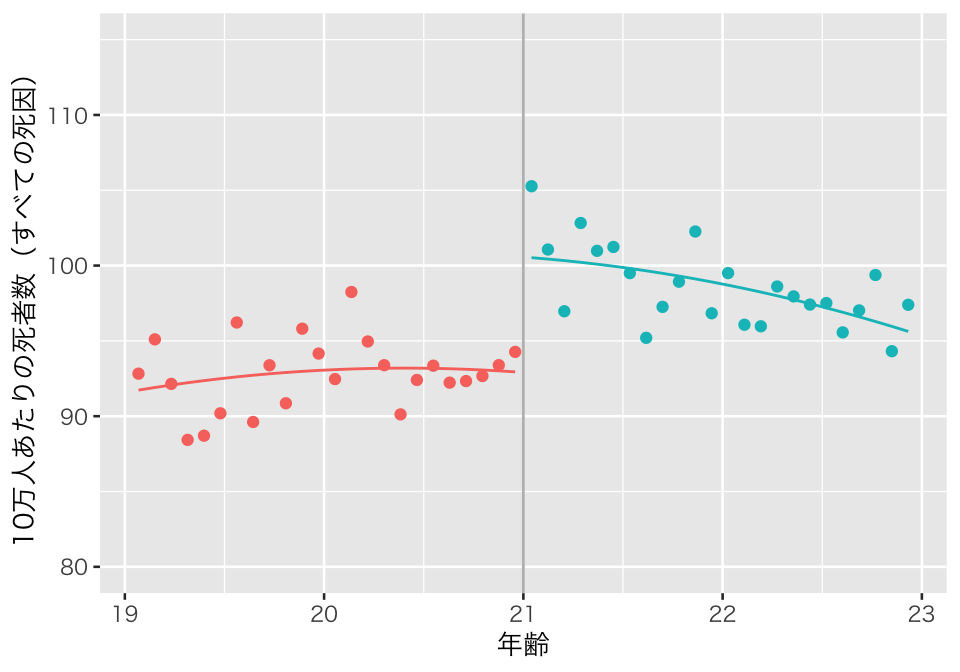
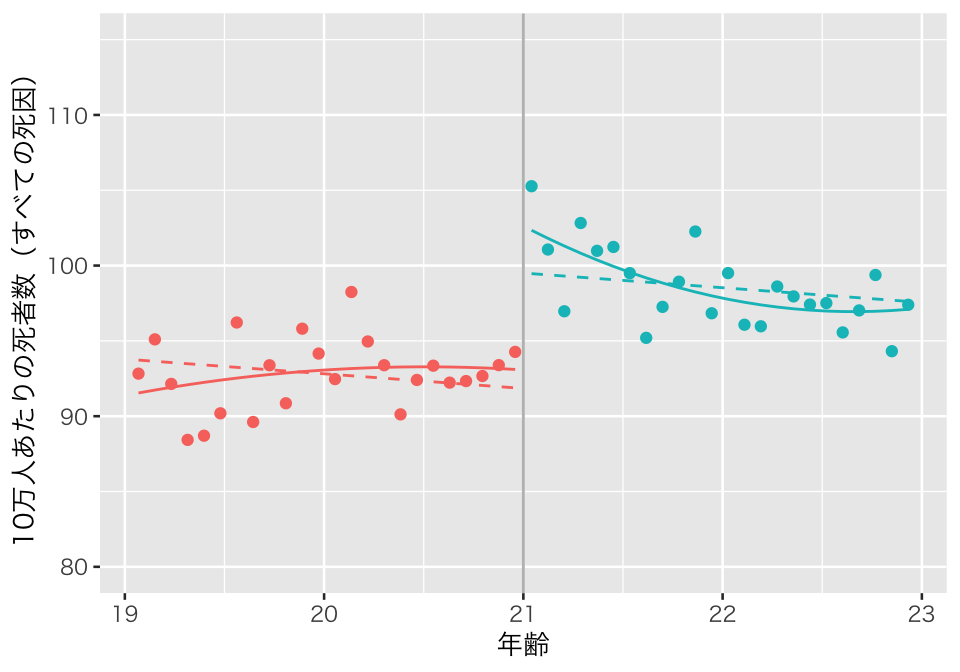
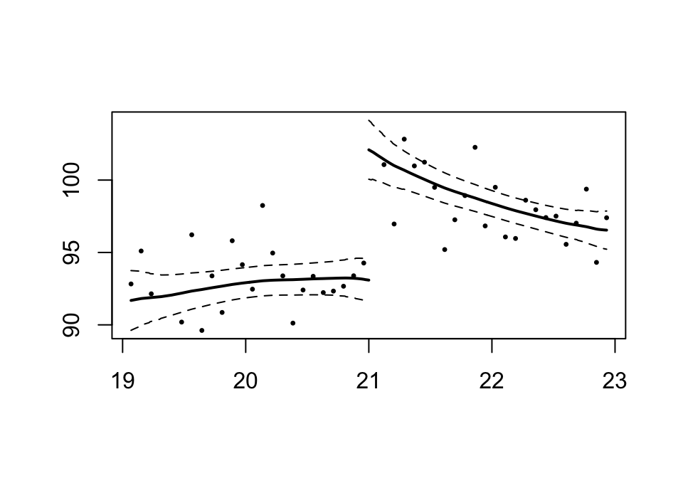
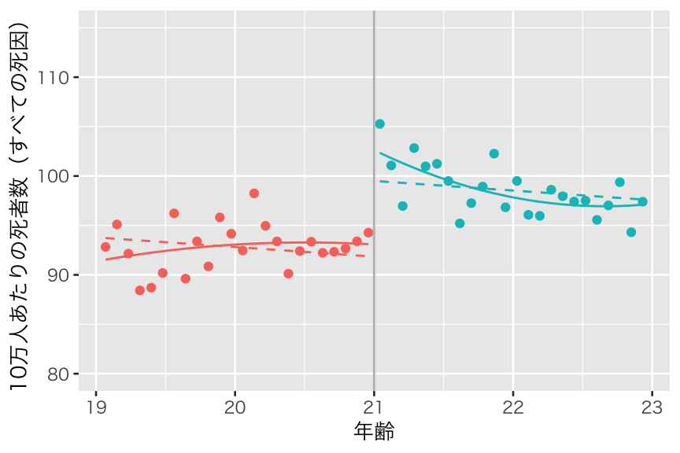

Topic 8 回帰不連続デザイン
- トピック8の講義スライド (PDF, 1MB)
8.1 準備
8.1.1 予習、講義動画、実習課題
このトピックでやるべきことは、以下のとおりである。
- シラバス(PDFファイル) に記載されているトピック8の予習課題を読む。
- KUTLMS (Moodle) にあるトピック8の講義動画を視聴する。
- この資料の続きを読み、Rを使った実習を行うことで、回帰不連続デザイン (RDD) の使い方を学ぶ。
- 教科書 (安井 2020) 第5章のRを使った分析を自分でやってみる。
- 課題を提出する（選択制）。
8.1.2 Rパッケージの読み込み
必要なパッケージを読み込み、作図用の日本語フォントを設定する。
pacman::p_load(tidyverse, broom, rdd, haven)
theme_set(theme_gray(base_size = 10, base_family = "HiraginoSans-W3")) # macOS用
#theme_set(theme_gray(base_size = 10, base_family = "Meiryo")) # Windows用
#theme_set(theme_gray(base_size = 10, base_family = "IPAGothic")) # Ubuntu用
#showtext::showtext_auto() # Cloud用
#theme_set(theme_gray(base_size = 10, base_family = "noto")) # Cloud用8.1.3 このトピックで使うRコードの説明
8.1.3.1 alist()
式の内容を評価せずに、式（あるいはその他の表現）自体のリストを作りたいときに、list() の代わりに alist() を使う。
例えば、次のようなリストを考える。
これで、長さが4のリストができた。確認してみよう。
## [1] TRUE## [1] 4リストの中身を表示してみよう。
## $s
## [1] 102
##
## $d
## [1] 98
##
## $p
## [1] 200
##
## $d
## [1] 50このように、リストを作るときに指定した式の計算結果がリストの中に保存されている。
これに対し、alist() は式の中身を評価（計算）しない。
これで、長さが4のリストができた。確認してみよう。
## [1] TRUE## [1] 4リストの中身を表示してみよう。
## $s
## 100 + 2
##
## $d
## 100 - 2
##
## $p
## 100 * 2
##
## $r
## 100/2このように、リストの中に式そのものが保存されていることがわかる。
8.2 法定飲酒年齢の影響
8.2.1 Angrist and Pischke (2009) の例
Angrist and Pischke (2009) の第4章にある、法定飲酒年齢 (minimum legal drinking age; MLDA) の存在が21歳の誕生日付近の死亡者数に与える影響を分析してみよう。
データは、Mastering ’Metrics から入手できる（トピック6で使ったものとは異なるデータなので注意）。
download.file() でファイルがうまくダウンロードできない場合は、ウェブブラウザで指定のURLにアクセスして手動でデータを入手する。
download.file(url = "http://masteringmetrics.com/wp-content/uploads/2015/01/AEJfigs.dta",
dest = "data/AEJfigs.dta")
```ダウンロードしたデータを読み込む。トピック6とは異なり、このデータにはMLDAが21歳の場合のみが含まれている。また、このデータの観測単位は、「誕生日によって区切られた年齢グループ」である。例えば、「19歳の誕生日になってから1ヶ月未満の人たち」「19歳の誕生日になってから1ヶ月以上2ヶ月未満の人たち」といいうように、年齢（約30日単位）が1つの観測点を構成している。
データの中身を確認しておこう。
## agecell all allfitted internal
## Min. :19.07 Min. : 88.43 Min. : 91.71 Min. :15.98
## 1st Qu.:20.08 1st Qu.: 92.79 1st Qu.: 93.04 1st Qu.:18.60
## Median :21.00 Median : 95.69 Median : 95.18 Median :20.29
## Mean :21.00 Mean : 95.67 Mean : 95.80 Mean :20.29
## 3rd Qu.:21.92 3rd Qu.: 98.03 3rd Qu.: 97.79 3rd Qu.:21.98
## Max. :22.93 Max. :105.27 Max. :102.89 Max. :24.37
## NA's :2 NA's :2
## internalfitted external externalfitted alcohol
## Min. :16.74 Min. :71.34 Min. :73.16 Min. :0.6391
## 1st Qu.:18.67 1st Qu.:73.04 1st Qu.:74.06 1st Qu.:0.9962
## Median :20.54 Median :74.81 Median :74.74 Median :1.2119
## Mean :20.28 Mean :75.39 Mean :75.52 Mean :1.2573
## 3rd Qu.:21.66 3rd Qu.:77.24 3rd Qu.:76.06 3rd Qu.:1.4701
## Max. :24.04 Max. :83.33 Max. :81.78 Max. :2.5193
## NA's :2 NA's :2
## alcoholfitted homicide homicidefitted suicide
## Min. :0.7943 Min. :14.95 Min. :16.26 Min. :10.89
## 1st Qu.:1.0724 1st Qu.:16.61 1st Qu.:16.54 1st Qu.:11.61
## Median :1.2471 Median :16.99 Median :16.99 Median :12.20
## Mean :1.2674 Mean :16.91 Mean :16.95 Mean :12.35
## 3rd Qu.:1.4455 3rd Qu.:17.29 3rd Qu.:17.25 3rd Qu.:12.82
## Max. :1.8174 Max. :18.41 Max. :17.76 Max. :14.83
## NA's :2 NA's :2
## suicidefitted mva mvafitted drugs
## Min. :11.59 Min. :26.86 Min. :27.87 Min. :3.202
## 1st Qu.:11.61 1st Qu.:30.12 1st Qu.:30.17 1st Qu.:3.755
## Median :12.25 Median :31.64 Median :31.73 Median :4.314
## Mean :12.36 Mean :31.62 Mean :31.68 Mean :4.250
## 3rd Qu.:13.04 3rd Qu.:33.10 3rd Qu.:33.40 3rd Qu.:4.756
## Max. :13.55 Max. :36.39 Max. :34.82 Max. :5.565
## NA's :2 NA's :2
## drugsfitted externalother externalotherfitted
## Min. :3.449 Min. : 7.973 Min. : 8.388
## 1st Qu.:3.769 1st Qu.: 9.149 1st Qu.: 9.347
## Median :4.323 Median : 9.561 Median : 9.690
## Mean :4.255 Mean : 9.599 Mean : 9.610
## 3rd Qu.:4.679 3rd Qu.:10.122 3rd Qu.: 9.939
## Max. :5.130 Max. :11.483 Max. :10.353
## NA's :2年齢を記録した変数は agecell、死者数（全ての死因）は all である。all には欠測値が2つある。
回帰分析を行うために、いくつかの変数を変換・作成する。
MLDA <- MLDA %>%
mutate(age = agecell - 21, # 21歳を中心に年齢を中心化（21歳の誕生日からのズレを測る変数）
over = as.integer(agecell > 21), # 21歳以上を示すダミー変数: 処置を表す
age_sq = age^2)説明を簡単にするため（Angrist and Pischke (2009) の分析に合わせるため）に、死者数に欠測がある観測個体を除外する（欠測値のより望ましい取り扱いについては、高橋 and 渡辺 (2017), Buuren (2018) を参照されたい）。
以下では、このデータを使って分析を行う
8.2.2 パラメトリックRD
統計学において、「パラメトリックな (parametric)」手法と「ノンパラメトリックな (nonparametric)」手法の違いを大雑把に捉えると、
- 仮定が厳しいのがパラメトリック、緩いのがノンパラメトリック
- 推定する母数 (parameter) が少ないのがパラメトリック、多いのがノンパラメトリック
である。RDDの文脈では、回帰式に特定の関数形を仮定してから推定するのがパラメトリックRD、特定の関数形を仮定しないのが、ノンパラメトリックRDである。
例えば、「\(Y\) を \(X\) に回帰する」とき、回帰関数を \[ Y_i = f(X_i) \] とだけ考えるのは、ノンパラメトリック回帰である。\(f(X)\) の関数形は無数にありうる。
無数にある関数形のうち、特定の関数形、例えば \[ Y_i = \beta_0 + \beta_1 X_i + e_i \] や \[ Y_i = \gamma_0 + \gamma_1 X_i + \gamma_2 X_i^2 + u_i \] などを仮定し、特定した関数形に現れるパラメタ (parameters) を推定するのがパラメトリック回帰である。
ここでは、すべての死因による死者数の回帰関数として、以下の4つの関数形を考える。
利用する変数：
- 結果変数 \(Y\)：すべての死因による死者数（10万人あたり）、変数 all
- 処置変数 \(D\)：法律で飲酒が認められていることを表すダミー変数 over
- 割当変数 \(R\)：年齢。21歳を基準に中心化、変数 age
推定に使う関数形（モデル）：
\(Y_i = \alpha + \rho D_i + \beta R_i + e_i\)
\(Y_i = \alpha + \rho D_i + \beta R_i + \gamma (D_i \times R_i) + e_i\)
\(Y_i = \alpha + \rho D_i + \beta_1 R_i + \beta_2 R_i^2 + e_i\)
\(Y_i = \alpha + \rho D_i + \beta_1 R_i + \beta_2 R_i^2 + \gamma_1 (D_i \times R_i) + \gamma_2 (D_i \times R_i^2) + e_i\)
割当変数 \(R\) を中心化して使えば、どの関数形においても \(\rho\) の推定値が処置効果の推定値となる。
これらの式を、lm()で推定する formula としてまとめよう。
models1 <- alist(
model1 = all ~ over + age,
model2 = all ~ over * age,
model3 = all ~ over + age + age_sq,
model4 = all ~ over * age + over * age_sq) %>%
enframe(name = "model_name", value = "formula")4つの回帰式を、一挙に推定する。
rdd1 <- models1 %>%
mutate(model = map(.x = formula, .f = lm, data = myd)) %>%
mutate(pred = map(.x = model, .f = predict), # 予測値を計算する
result = map(.x = model, .f = tidy))結果は、rdd1 に保存されている。結果を1つずつ確認していこう。まず、モデル1による推定結果を図示する。
p1_rdd1 <- myd %>%
mutate(pred = rdd1$pred[[1]]) %>%
ggplot(aes(x = agecell, color = as.factor(over))) +
geom_point(aes(y = all)) +
geom_line(aes(y = pred)) +
geom_vline(xintercept = 21, color = "gray") +
ylim(80, 115) +
labs(x = "年齢", y = "10万人あたりの死者数（すべての死因）") +
theme(legend.position = "none")
plot(p1_rdd1)
Angrist and Pischke (2009) の図4.2 (p.150) と同じ図ができた。 21歳の誕生日に、死者数のジャンプがある様子が見てとれる。 この分析は、処置変数と割当変数のみを説明変数として利用する、最も単純な パラメトリックRD である。 そのため、予測値は「直線」であり、21歳未満と21歳以上の両者について直線の傾きが同じである。 このとき、処置効果の推定値と標準誤差は、
rdd1 %>%
unnest(cols = result) %>%
filter(model_name == "model1", term == "over") %>%
select(term, estimate, std.error) %>%
knitr::kable(digits = 2)| term | estimate | std.error |
|---|---|---|
| over | 7.66 | 1.44 |
である。
次に、処置変数と割当変数の交差項をもつモデル2の結果を図示しよう。
p2_rdd1 <- myd %>%
mutate(pred = rdd1$pred[[2]]) %>%
ggplot(aes(x = agecell, color = as.factor(over))) +
geom_point(aes(y = all)) +
geom_line(aes(y = pred)) +
geom_vline(xintercept = 21, color = "gray") +
ylim(80, 115) +
labs(x = "年齢", y = "10万人あたりの死者数（すべての死因）") +
theme(legend.position = "none")
plot(p2_rdd1)交差項を使った結果、21歳未満と21歳以上の直線の傾きが異なっている。 この関数形でもやはり、21歳の誕生日に死者数のジャンプがある様子が見てとれる。 処置効果の推定値と標準誤差は、
rdd1 %>%
unnest(cols = result) %>%
filter(model_name == "model2", term == "over") %>%
select(term, estimate, std.error) %>%
knitr::kable(digits = 2)| term | estimate | std.error |
|---|---|---|
| over | 7.66 | 1.32 |
である。
続いて、モデル1に割当変数の二乗項を加えたモデル3の推定結果を図示しよう。
p3_rdd1 <- myd %>%
mutate(pred = rdd1$pred[[3]]) %>%
ggplot(aes(x = agecell, color = as.factor(over))) +
geom_point(aes(y = all)) +
geom_line(aes(y = pred)) +
geom_vline(xintercept = 21, color = "gray") +
ylim(80, 115) +
labs(x = "年齢", y = "10万人あたりの死者数（すべての死因）") +
theme(legend.position = "none")
plot(p3_rdd1)
二乗項を使った結果、予測値が直線ではなく「曲線」として推定された。交差項がないので、曲線は21歳未満と21歳以上で同じである（ジャンプをなくせば滑らかに繋がる）。 この関数形でもやはり、21歳の誕生日に死者数のジャンプがある様子が見てとれる。 処置効果の推定値と標準誤差は、
rdd1 %>%
unnest(cols = result) %>%
filter(model_name == "model3", term == "over") %>%
select(term, estimate, std.error) %>%
knitr::kable(digits = 2)| term | estimate | std.error |
|---|---|---|
| over | 7.66 | 1.34 |
である。
最後に、交差項と二乗項を含むモデル4の推定結果を可視化しよう。 比較のため、モデル1で推定した直線も点線として表示する。
p4_rdd1 <- myd %>%
mutate(pred0 = rdd1$pred[[1]],
pred = rdd1$pred[[4]]) %>%
ggplot(aes(x = agecell, color = as.factor(over))) +
geom_point(aes(y = all)) +
geom_line(aes(y = pred0), linetype = "dashed") +
geom_line(aes(y = pred)) +
geom_vline(xintercept = 21, color = "gray") +
ylim(80, 115) +
labs(x = "年齢", y = "10万人あたりの死者数（すべての死因）") +
theme(legend.position = "none")
plot(p4_rdd1)
Angrist and Pischke (2009) の図4.4 (p.158) と同じ図ができた。交差項と二乗項の両方を使ったので、予測値が曲線になり、21歳未満と21歳以上では異なる曲線が描かれている。 ここでもやはり、21歳の誕生日に死者数のジャンプがある様子が見てとれる。 処置効果の推定値と標準誤差は、
rdd1 %>%
unnest(cols = result) %>%
filter(model_name == "model4", term == "over") %>%
select(term, estimate, std.error) %>%
knitr::kable(digits = 2)| term | estimate | std.error |
|---|---|---|
| over | 9.55 | 1.99 |
| である。 |
推定した4つのモデルの推定結果を比べてみよう。
rdd1 %>%
unnest(cols = result) %>%
filter(term == "over") %>%
select(model_name, term, estimate, std.error) %>%
knitr::kable(digits = 2)| model_name | term | estimate | std.error |
|---|---|---|---|
| model1 | over | 7.66 | 1.44 |
| model2 | over | 7.66 | 1.32 |
| model3 | over | 7.66 | 1.34 |
| model4 | over | 9.55 | 1.99 |
モデル1から3までの結果はほぼ同じであるが、モデル4の推定値だけ大きいことがわかる。 モデル1から3か、モデル4のうち、少なくとも一方の推定にバイアスが生じていると思われる。 私たちはどの関数形が正しいかを知らない（知っていれば苦労しない）ので、バイアスがどちらにあるかわからない。どちらにもあるという可能性もある。
このように、パラメトリックRDの推定結果は関数形に依存する。誤った関数形を使うと、誤った推定結果を得ることになる。繰り返しになるが、私たちは正しい式を知らないので、関数形の誤りの可能性は常に存在する。 したがって、経済学、経営学、心理学、政治学などの理論に基づいて妥当な関数形（回帰式）を選ぶ必要がある。理論的に妥当性が高い複数の関数形によって推定した結果がどれも実質的に同じなら、推定結果に対する信頼性が高まる。例えば、上のモデル4の推定結果もモデル1から3と同じ7.66であれば、処置効果が約7.7という推定結果の信頼性は高いといえるだろう。
パラメトリックRD（あるいは、その他のパラメトリック回帰） を行う場合には、推定結果が関数形に（あまり）依存しないということを示すことが重要である。関数形によって推定結果が大きく異なるようでは、（正しい関数形を知らない限り）推定結果を信用することはできない。
8.2.3 ノンパラメトリックRD
パラメトリックRDでは、回帰式が特定の形であると想定し、割当変数 (running variable) が最小値から最大値までの範囲全体について回帰式の予測値を計算した。
それに対し、ノンパラメトリックRDでは回帰式の関数形を考えない。 \(R\)の分布範囲全体の予測をする代わりに、ノンパラメトリックRDでは推定の対象となる範囲をカットオフ値の周辺に限定し、処置群と統制群の平均値を比較する。推定の対象となる範囲を決める幅のことをバンド幅 (bandwidth) と呼ぶ。
バンド幅の選び方によって推定値が変わることが想定されるので、ノンパラメトリックRDではバンド幅の選び方が重要になる。処置群と統制群が比較可能なのはカットオフ値付近なので、バンド幅が狭いほどバイアスは小さくなることが期待される。しかし、バンド幅を狭くすると、推定の対象となる個体数（サンプルサイズ）が小さくなるので、推定が不安定になり、標準誤差が大きくなる。よって、このバイアスと標準誤差のトレードオフのバランスを考えて、バンド幅を選ぶ必要がある（詳しくは、Imbens and Kalyanaraman (2011) を参照）。
まず、データ全体での年齢の分布を確認してみよう。
## Min. 1st Qu. Median Mean 3rd Qu. Max.
## 19.07 20.03 21.00 21.00 21.97 22.93このデータには、（ほぼ）19歳から23歳までの観測値が含まれていることがわかる。カットオフ値は21歳なので、分析対象を21歳周辺のデータに絞り込み、処置効果を推定してみよう。
どのバンド幅がいいかわからないので、バンド幅を、0.5, 0.75, 1.0, 1.25, 1.5 にしてみる。 バンド幅が 0.5 というのは、年齢 (agecell の値） が \(21 \pm 0.5\) の（すなわち、中心化した変数である ageが \([-0.5, 0.5]\) の範囲にある）データのみを分析に使うという意味である。 利用するバンド幅のベクトルを作る。
それぞれのバンド幅に応じたデータフレームを作る。
それぞれのバンド幅で、処置群と統制群の結果変数の平均値の差を回帰によって求める。
結果をまとめて表示する。
tibble(bandwidth = bw) %>%
mutate(result = map(.x = rdd_np, .f = tidy)) %>%
unnest(cols = "result") %>%
filter(term == "over") %>%
select(bandwidth:std.error) %>%
knitr::kable(digits = 2)| bandwidth | term | estimate | std.error |
|---|---|---|---|
| 0.50 | over | 8.88 | 2.45 |
| 0.75 | over | 9.85 | 2.20 |
| 1.00 | over | 9.75 | 1.93 |
| 1.25 | over | 9.44 | 1.70 |
| 1.50 | over | 8.70 | 1.55 |
この結果から、バンド幅が小さいほど標準誤差が大きくなることが確認できる。また、バンド幅によって推定値が変わる。「平均すれば」バンド幅が狭いほうがバイアスが小さいと期待できるが、この1つのデータセットからでは、バンド幅が狭い値の推定値が正しいのか、偶然得られただけなのかはわからない。
次に、この推定方法がノンパラメトリックだと呼ばれる理由について考えてみよう。 ここでは、対象を20歳から22歳までにする（つまり、バンド幅を1にする）。
このデータを使い、パラメトリックRDで推定したモデル1とモデル4の関数形を利用して処置効果を推定してみる。 まずは、式を作る。
models2 <- alist(
model1 = all ~ over + age,
model4 = all ~ over * age + over * age_sq
) %>%
enframe(name = "model_name", value = "formula")推定する。
rdd2 <- models2 %>%
mutate(model = map(.x = formula, .f = lm, data = myd_sub)) %>%
mutate(pred = map(.x = model, .f = predict),
result = map(.x = model, .f = tidy))結果を表示する。
rdd2 %>%
unnest(cols = result) %>%
filter(term == "over") %>%
select(model_name, estimate, std.error) %>%
knitr::kable(digits = 2)| model_name | estimate | std.error |
|---|---|---|
| model1 | 9.75 | 1.93 |
| model4 | 9.61 | 2.89 |
パラメトリックRDの場合には、モデル1とモデル4 の結果は大きく異なっていた。しかし、分析対象をカットオフ値付近に限定することで、関数形の違いによる推定値の差がほとんどなくなった。このように、バンド幅を狭くすると、推定値が回帰式の関数形に（あまり）依存しなくなる。（非常に大雑把に言えば）これが「ノンパラメトリック」と呼ばれる理由である。
ノンパラメトリックRD を行うには、rdd パッケージが便利である。最適なバンド幅の推定し、局所的平均処置効果 (LATE) の推定を実行してくれる RDestimate() という関数があるので、それを利用してみよう。以下のよう、結果変数を割当変数（処置変数ではない）に回帰するformula を使う。
（注意：age を使うなら、cutpoint = 0 とする。）
結果を確認してみよう。
##
## Call:
## RDestimate(formula = all ~ agecell, data = myd, cutpoint = 21)
##
## Type:
## sharp
##
## Estimates:
## Bandwidth Observations Estimate Std. Error z value Pr(>|z|)
## LATE 1.6561 40 9.001 1.480 6.080 1.199e-09
## Half-BW 0.8281 20 9.579 1.914 5.004 5.609e-07
## Double-BW 3.3123 48 7.953 1.278 6.223 4.882e-10
##
## LATE ***
## Half-BW ***
## Double-BW ***
## ---
## Signif. codes: 0 '***' 0.001 '**' 0.01 '*' 0.05 '.' 0.1 ' ' 1
##
## F-statistics:
## F Num. DoF Denom. DoF p
## LATE 33.08 3 36 3.799e-10
## Half-BW 29.05 3 16 2.078e-06
## Double-BW 32.54 3 44 6.129e-11この表で、Estimates の欄にあるる LATE の行に、推定結果が表示されている。最適なバンド幅は約1.66 と推定されている。このとき、処置効果 (LATE) の推定値は 9.00 である。 また、Half-BW にバンド幅を最適幅の半分にした場合、Double-BW にバンド幅を最適幅の2倍にした場合の推定値がそれぞれ表示されている。
この結果は、plot() で図示できる。

この図は、パラメトリックRDのモデル4 に似ている。もう1度図示して比べてみよう。

やはり似ていることがわかる。実際、ノンパラメトリックRDの推定値にもっとも近いのは、モデル4の推定値である。 パラメトリックRDのモデル1から3の推定には大きな（過小推定）バイアスがあったのではなないかと推測される。
パラメトリックRDのモデル4は、4つの関数形の中で最も複雑なものだった。複雑なモデルを想定するのは難しいこともある。パラメトリックなモデルとして、比較的単純なモデル1から3のようなものしか推定しない場合もあるかもしれない。そのようなときでも、ノンパラメトリックRDを行うことによって、定式化の誤りに気づくこともあるかもしれない。 RDDに限った話ではないが、1つのでデータを多角的に検討することが重要である。
関数形がわからないときは、「境界線付近」以外のサンプルを使うことは諦めて、ノンパラメトリックRDでバイアスの小さな推定値を得ることを目指すほうが良いかもしれない。
8.3 トピック8の課題
Angrist and Pischke (2009) によれば、飲酒可能になると死者数が急に増える（閾値で死者数のジャンプがある）のは、飲酒運転による事故が増えるためであると考えられる。これを踏まえて、以下の内容を実行しなさい。
- 結果変数を mva（交通事故死）にしたときの、RDD による因果推論。
- 結果変数を internal（内臓疾患による死）にしたときの、RDD による因果推論。
- 補助教材に示された結果（結果変数を all にした場合）と自分で実行した1と2の結果を併せて考えると、どのようなことがわかるか説明しなさい。特に、「カットオフ値付近で飲酒が死に与える影響」があるといえるかどうか、議論しなさい。
- 課題レポートは R Markdown で作成し、PDF に knit して提出すること。
- 提出するファイル：metrics_hw08_LastFirst.pdf
- 提出方法：Slack のダイレクトメッセージで提出。
- 提出期限：2020年7月23日（木）正午（日本時間）
- トピック6, 8, 9 の課題からどれか1つを選んで提出
- どれを選んでも良いが、提出期限が異なるので注意。
- 2つ以上提出した場合、最も評価が高いものを成績評価の対象とする。
参考文献
Angrist, Joshua D., and Jörn-Steffen Pischke. 2009. Mostly Harmless Econometrics: An Empiricist’s Companion. Princeton: Princeton University Press.
Buuren, Stef van. 2018. Flexible Imputation of Missing Data. Second Edition. Boca Raton, FL: CRC Press.
Imbens, Guido, and Karthik Kalyanaraman. 2011. “Optimal Bandwidth Choice for the Regression Discontinuity Estimator.” The Review of Economic Studies 79 (3): 933–59. https://doi.org/10.1093/restud/rdr043.
安井翔太. 2020. 効果検証入門：正しい比較のための因果推論/計量経済学の基礎. 技術評論社.
高橋将宜, and 渡辺美智子. 2017. 欠測データ処理：Rによる単一代入法と多重代入法. 共立出版.